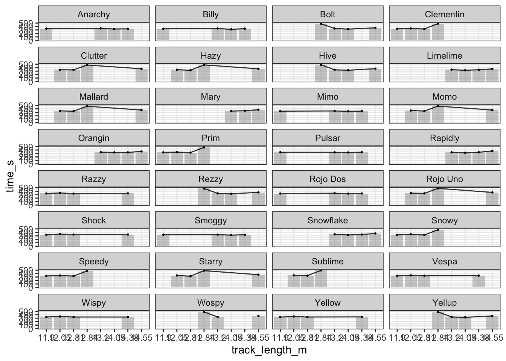
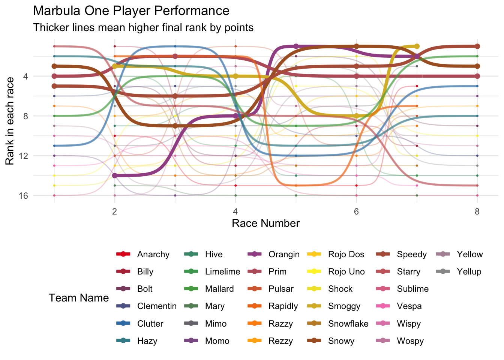
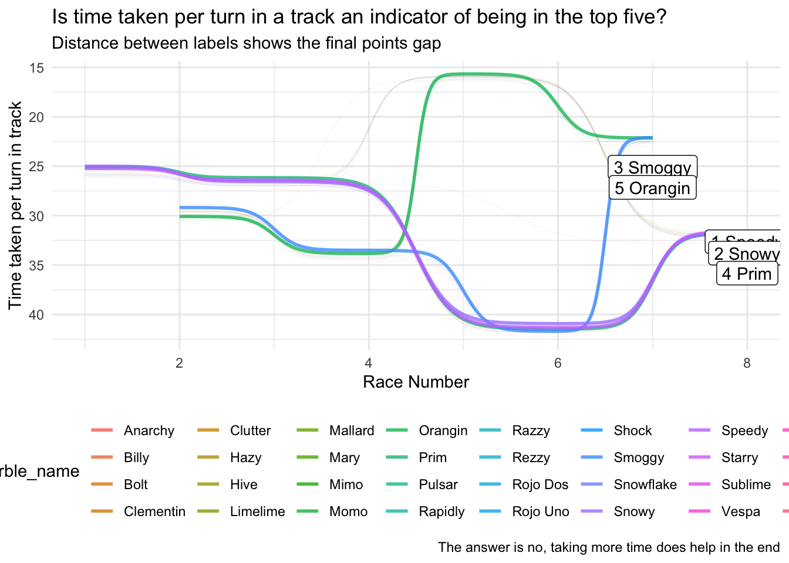

marbles <- marbles %>% select(-notes,-host,-source)TidyTuesday Lessons: Marble Racing
Moneyball in Marble Racing
For this weeks TidyTuesday dataset, the R4DS community has given a dataset on Marble Racing statistics. Specifically one season from Marbula One. Initially I had no idea on the context behind this, and therefore I began exploring a bit by watching the Youtube videos and reading up on the Wiki. My usual procedure for these datasets is to gain an understanding of the context by placing myself in the midst of the context and asking questions along the way.
Removing columns from the original dataset
Do players play for more than one team?
# Players that have played under different teams --------------------------
marbles %>%
group_by(marble_name) %>%
transmute(teams = n_distinct(team_name)) %>%
filter(teams > 1)# A tibble: 0 × 2
# Groups: marble_name [0]
# ℹ 2 variables: marble_name <chr>, teams <int># No marbles switched teamsThis was fairly a stupid question that I asked myself before reading the Wiki properly. Regardless, since there was only season it’s highly unlikely that team players will be switching between teams.
Does track length affect the performance of a marble
# Track Length affects player performance ---------------------------------
# 32 players in total
marbles %>%
filter(str_detect(marbles$race,"Q",negate=TRUE)) %>%
mutate(track_length_m = factor(track_length_m)) %>%
group_by(track_length_m,marble_name) %>%
mutate(row_id = row_number()) %>%
ungroup() %>%
ggplot(aes(x=track_length_m,y=time_s))+
geom_col(alpha=0.3) +
geom_point(size=0.4) + geom_line(aes(group=row_id),alpha=0.8) +
facet_wrap(~ marble_name,nrow=8) +
theme_bw()
# track length doesnt affect performanceSo from the above it was quite clear that the track length doesnt really affect the performance. This should have been obvious from the way each marble gets lifted back to her higher elevation, thereby restoring the gravitational energy within it.
The Moneyball Idea
The idea behind the moneyball theory was to use undervalued statistics to win the game. (That is an overly simplified statement. More info can be found here [http://thesportjournal.org/article/an-examination-of-the-moneyball-theory-a-baseball-statistical-analysis/])
One thing that baffled me with regards to the statistic that was used in moneyball was the way they decided on the statistic. I have seen several tutorials online that talked of using linear regression, but the actual thinking behind coming up with that statistic was still unclear to me.
In order to find a new statistic I decided to go further from the given data and collect some extra from the videos on the sites or tracks.
# Adding aditional site statistics ----------------------------------------
site_data <- tibble(
site = unique(marbles$site),
turns = c(13,11,13,10,23,8,15,15),
splits = c(1,2,2,0,1,1,1,0),
site_avg_lap_time = c(33.58,36.55,26.94,31.29,41.12,24.11,33.95,30.31)
)
site_data# A tibble: 8 × 4
site turns splits site_avg_lap_time
<chr> <dbl> <dbl> <dbl>
1 Savage Speedway 13 1 33.6
2 O'raceway 11 2 36.6
3 Momotorway 13 2 26.9
4 Hivedrive 10 0 31.3
5 Greenstone 23 1 41.1
6 Short Circuit 8 1 24.1
7 Razzway 15 1 34.0
8 Midnight Bay 15 0 30.3marbles <- marbles %>% left_join(site_data)Joining with `by = join_by(site)`marbles <- marbles %>%
mutate(time_per_turn = time_s / turns) %>%
mutate(diff_avg_site_lap_time = site_avg_lap_time - avg_time_lap)
glimpse(marbles)Rows: 256
Columns: 16
$ date <chr> "15-Feb-20", "15-Feb-20", "15-Feb-20", "15-Feb-…
$ race <chr> "S1Q1", "S1Q1", "S1Q1", "S1Q1", "S1Q1", "S1Q1",…
$ site <chr> "Savage Speedway", "Savage Speedway", "Savage S…
$ marble_name <chr> "Clementin", "Starry", "Momo", "Yellow", "Snowy…
$ team_name <chr> "O'rangers", "Team Galactic", "Team Momo", "Mel…
$ time_s <dbl> 28.11, 28.37, 28.40, 28.70, 28.71, 28.72, 28.96…
$ pole <chr> "P1", "P2", "P3", "P4", "P5", "P6", "P7", "P8",…
$ points <dbl> NA, NA, NA, NA, NA, NA, NA, NA, NA, NA, NA, NA,…
$ track_length_m <dbl> 12.81, 12.81, 12.81, 12.81, 12.81, 12.81, 12.81…
$ number_laps <dbl> 1, 1, 1, 1, 1, 1, 1, 1, 1, 1, 1, 1, 1, 1, 1, 1,…
$ avg_time_lap <dbl> 28.11, 28.37, 28.40, 28.70, 28.71, 28.72, 28.96…
$ turns <dbl> 13, 13, 13, 13, 13, 13, 13, 13, 13, 13, 13, 13,…
$ splits <dbl> 1, 1, 1, 1, 1, 1, 1, 1, 1, 1, 1, 1, 1, 1, 1, 1,…
$ site_avg_lap_time <dbl> 33.58, 33.58, 33.58, 33.58, 33.58, 33.58, 33.58…
$ time_per_turn <dbl> 2.162308, 2.182308, 2.184615, 2.207692, 2.20846…
$ diff_avg_site_lap_time <dbl> 5.47, 5.21, 5.18, 4.88, 4.87, 4.86, 4.62, 4.47,…marbles <- marbles %>%
mutate(race_type = str_match(marbles$race,"S1([A-Z])\\d")[,2],
race_number = as.numeric(str_match(marbles$race,"S1[A-Z](\\d)")[,2]))
total_points <- marbles %>%
filter(race_type == "R") %>%
group_by(marble_name) %>%
summarize(total_points = sum(points,na.rm = T)) %>%
ungroup() %>%
arrange(desc(total_points)) %>%
mutate(marble_rank = row_number())
getPalette = colorRampPalette(brewer.pal(9, "Set1"))
marbles <- marbles %>%
left_join(total_points)Joining with `by = join_by(marble_name)`data <- marbles %>%
filter(race_type == "R") %>%
group_by(race_number) %>%
arrange(time_s) %>%
mutate(rank = row_number()) %>%
ungroup() %>%
select(rank,race_number,team_name,marble_name,marble_rank)
m_plot<- data %>%
ggplot(aes(x=race_number,y=rank,group=marble_name,color=marble_name)) +
geom_bump(size = 0.5, alpha = 0.3) +
geom_point(size=0.4) +
geom_bump(data=data %>% filter(marble_rank <= 5),alpha=1,size=1.5)+
geom_point(data=data %>% filter(marble_rank <= 5),size=1.9) +
geom_bump(data=data %>% filter(marble_rank <= 10 & marble_rank > 5),
alpha=0.6,size=1.0) +
geom_point(data=data %>% filter(marble_rank <= 5),size=1.4) +
scale_y_reverse() +
scale_color_manual(values = getPalette(length(unique(marbles$marble_name))))+
theme(legend.position="bottom") +
guides(color=guide_legend(nrow=6)) +
labs(x = "Race Number", y= "Rank in each race",color="Team Name",
title="Marbula One Player Performance",
subtitle = "Thicker lines mean higher final rank by points")
m_plot
A simple bump plot to visualize the marble ranks with the new statistic
# getPalette = colorRampPalette(brewer.pal(9, "Blues"))
anot_data <- marbles %>%
filter(race_type == "R") %>%
filter(marble_rank <= 5 & race_number >= 7)
m_plot_2 <- marbles %>%
filter(race_type == "R") %>%
ggplot(aes(x=race_number,y=time_per_turn,group=marble_name,color=marble_name)) +
#geom_point() + geom_line()
geom_bump(size=0.1,alpha = 0.2) +
geom_bump(data=marbles %>%
filter(race_type == "R") %>%
filter(marble_rank <= 5),alpha = 0.8,size=1) +
annotate("label",
x=(anot_data$race_number),
y=(anot_data$time_per_turn+anot_data$marble_rank),
label=paste(anot_data$marble_rank,anot_data$marble_name))+
scale_y_reverse() +
theme(legend.position="bottom") +
guides(color=guide_legend(nrow=4)) +
labs(x = "Race Number",y="Time taken per turn in track",
title="Is time taken per turn in a track an indicator of being in the top five?",subtitle="Distance between labels shows the final points gap",
caption="The answer is no, taking more time does help in the end")
m_plot_2
# ggsave(plot=m_plot_2,"tidy_tuesday_2020_06_02_2.png",width=297,height=210,units="mm")A change of question
Now suppose we feel like one of these statistics might be helpful to us. Now we need to formulate a way to decide whether a team selected by that statistic will win or not. For that I thought of modeling a simple bivariate distribution, preferrably that can model the probability that marble X and marble Y can win like this. $P_{X,Y}(X,Y) = {} $
But the problem now was how do I define winning? Would simply saying first place be enough? Then the probabilities will be tilted towards some marbles. Or would it be better to be broad and say winning can mean being in the top 3 positions. So now with that in mind, we have a discrete bivariate distribution that we want to find the exact or approximate probabilities of. Now the problem has become, how do we find the probabilities when we have really limited amount of data. One thought that came to my mind was to simulate a race and then estimate the probabilities of winning by Monte Carlo simulations. Simply put, we would similating many races with different team combinations and from them we try to calculate the relative probability that a team with X and Y has earned enough points to be in the top 3 positions.
A Computational Block and ending notes
Here is where i hit the biggest problem. Let me summarize
There are 32 marbles.
A team can have 2 members.
How many team combinations are possible? \(^{32}C_{2} = \frac{32!}{2! * 30!} = 496\)
And then came another problem, my first idea was to find \(^{496}C_{16}\) combinations but there would be conflicts as team combinations may have the same player in different teams.
From there on I thought of not going for the team combinations and instead thought of the player combinations in a race. Which ended up in an even worse dead end unfortunately as \(^{32}C_{16} = 601080390\) which meant that I’d have to simulate 601,080,390(six hundred one million eighty thousand three hundred ninety) races. (By simulating my intial thought was to regress the time that a player would take on a race and then sort by the time and award points accordingly. Here also I was lost as to whether the method would be feasible for such a large number of simulations.)
With that concludes my attempt at the tidy tuesday dataset, I learned a lot from it, but there were more questions unanswered than answered.